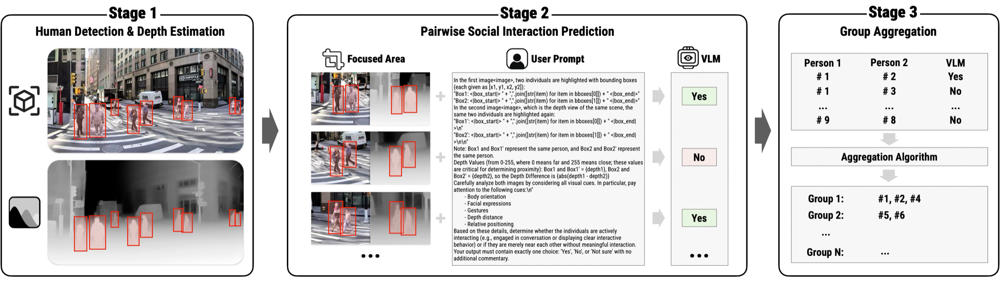
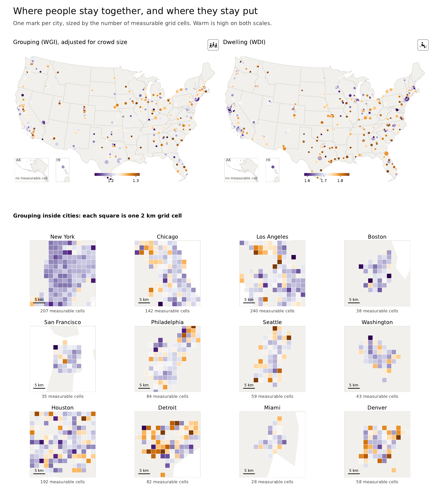

![]()
Ph.D. dissertation research, MIT Department of Urban Studies and Planning
Committee: Andres Sevtsuk (chair), Jinhua Zhao, Lawrence Vale · Expected completion: June 2027
Seeing HAI is the title and organizing framework of my dissertation. It is distinct from Sidewalk Ballet, a City Form Lab collaboration and public installation that I lead at MIT. The two projects intersect, but they have different scopes, research ownership, and outputs.
Approved dissertation proposal (PDF) — the document is password-protected; please email me for the password.
Research Question
Pedestrian counts describe how many people move through a street, but they do not show whether people stop, talk, rest, vend, play, or spend time together. Two sidewalks can carry similar foot traffic while supporting very different forms of public life. My dissertation asks how visual AI can extend close observation of these activities across cities without allowing a model’s available labels to define what matters.
The research combines ideas from urban studies with computer vision, vision-language models, and geospatial analysis. Its aim is to produce measures that remain interpretable as they move from individual street images to sidewalk segments and city-scale comparisons.
How This Research Came Together
The dissertation did not begin as a dissertation. It grew out of a sequence of projects, each of which exposed the question the next one had to answer.
Mapping the field. My first project after returning to academia was Clarity or Confusion, a systematic review of computer vision street attributes published in Cities (2024). Cataloging 104 attributes across 146 papers made one gap unmistakable: computer vision had learned to describe the physical street in detail, while the human activities and interactions that classic observational studies cared most about were nearly absent.
Encountering the problem. Through Sidewalk Ballet, the City Form Lab collaboration I lead at MIT, I began working directly on detecting social activity in street imagery — and found that no existing method handled its central difficulty well. A social group is not an object with visual edges; it is a relationship among people. That unsolved problem became the seed of the dissertation.
Building the missing method. MINGLE, published in the AAAI 2026 AI for Social Impact Track, solved the group-detection prerequisite: it combines person detection, depth-aware vision-language reasoning, and group aggregation to identify socially interacting groups, trained and evaluated on 79,265 human judgments with annotations released for 100,000 urban street images. MINGLE bridges the lab collaboration and the dissertation; with it in place, the dissertation proper could begin.

The three-stage group detection approach: person detection with depth estimation, pairwise interaction prediction by a vision-language model, and aggregation into social groups.
The Dissertation: Method, Findings, Data
The dissertation develops in three connected parts. Each takes the same underlying framework — reconstructing sidewalk-facing views from street-level panoramas and coding each visible person across ten observable dimensions, including social grouping, posture, mobility state, and activity — and pushes it in a different direction.
Data: Stay Together — 496 U.S. Cities
The data paper scales the collection nationally. It documents a dataset derived from 7,139,672 timestamped views from Apple Look Around and Bing Streetside across 496 U.S. cities, organized into 3.7 million block frontages with intersection views kept separate, and spanning weekday and weekend, midday and evening capture windows from 2011 to 2025. Alongside the resource, the draft reports exploratory patterns — for example, at a fixed number of detected people, views from denser tracts less often show those people together as one group. The derived data are being prepared for public release; the manuscript, Stay Together: Street-Level Social Indicators for Sidewalk Life Across 496 U.S. Cities, is in preparation.

Where people stay together, and where they stay put: grouping and dwelling indices across 496 U.S. cities, with 2-km grid detail for the twelve largest.
The Great Streets Visualization
The Great Streets is a working interface for moving between citywide patterns and the street-level observations behind them. The prototype connects segment-level indicators in a 3D map with source street-view images and person-level activity and interaction labels. This makes the measurement pipeline inspectable: a user can select a street segment, compare observations across imagery sources and times, and trace an aggregate value back to the visible evidence.